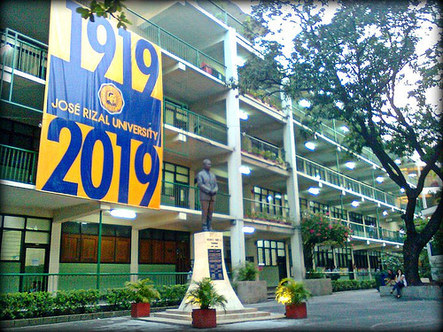

80 Shaw Boulevard, Mandaluyong
1552 Metro Manila
(02) 531 8031

José Rizal University (JRU)
Formerly José Rizal College / JRC is a non-sectarian, non-stock private educational institution. It is located at Shaw Boulevard, Mandaluyong City, Philippines. It was founded in 1919 by Vicente Fabella, who was the first Philippine Certified Accountant. READ MORE

 About Us
About Us
José Rizal University (JRU) prides itself for being among the most inexpensive private universities in the country that offers quality education. It is a non-stock, non-profit, non-sectarian private educational institution founded in 1919 by Don Vicente Fabella based on the ideal of good education available to all.
READ MOREFaculty
Looking for JRU faculty? We have that for you. Click READ MORE to see faculty list in IT Department
READ MORE Location
Location